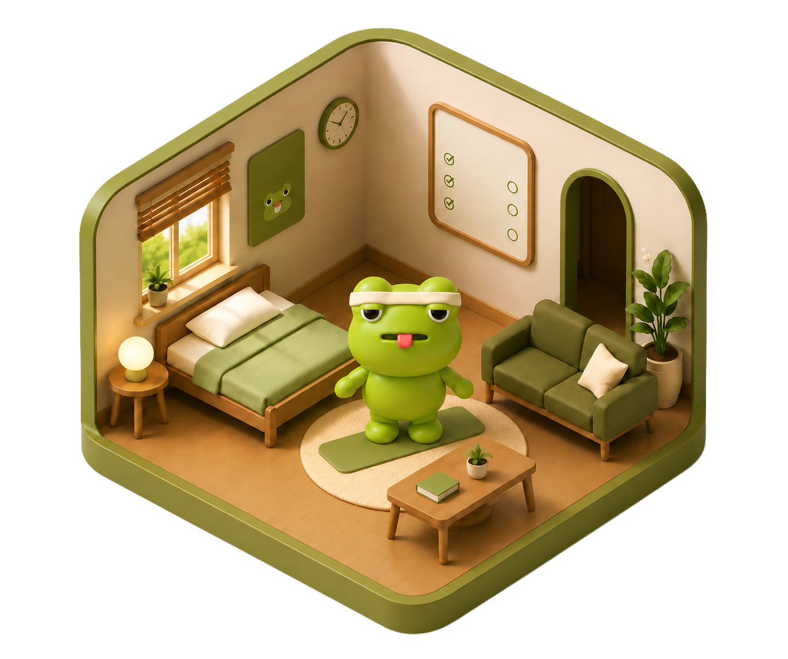
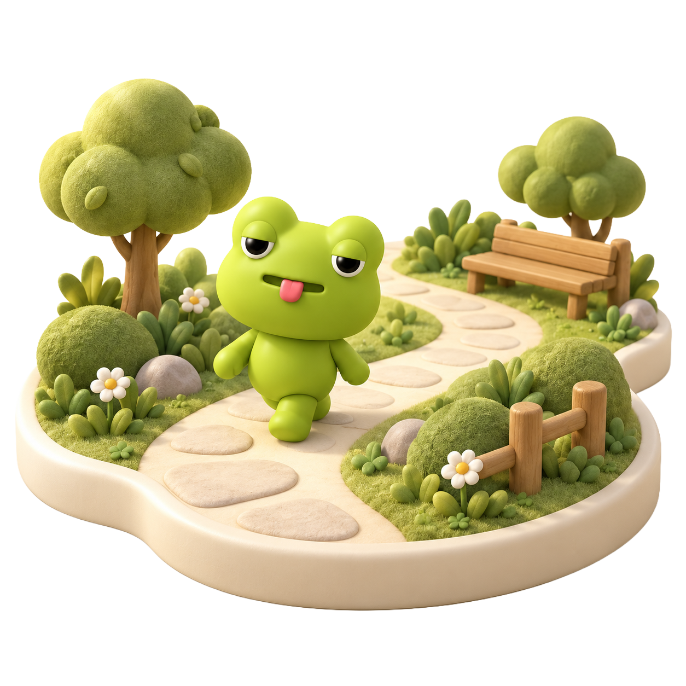

검진과 검진 사이
나를 돌보는 일상,
건강 습관 하나부터
건강을 챙기고 싶지만, 어디서부터 시작할지 막막하다면.
식사·운동·수면 중 지금 할 수 있는 습관 하나를 골라보세요.
날지켜방에서 하루 한 번 실천을 체크하고, 7일 동안의 나를 돌아보세요.
검진 결과 입력 없이 시작해요. 자세한 기록은 원할 때만 남겨요.
개편 예정 경험 · 화면 예시

오늘의 작은 습관
내가 고른 운동 습관
점심 먹고 10분 걷기
7일 중 4일 실천했어요
- 월 ✓
- 화 ✓
- 수 —
- 목 ✓
- 금 —
- 토 ✓
- 일 —
내가 체크한 실천을 돌아보는 예시예요.
작은 습관을 이어가는 방법
하나를 고르고, 하루 한 번.
7일 뒤 함께 돌아봐요
1. 습관 하나 고르기
식사·운동·수면 중 하나부터 시작해요.
‘한 끼에 채소 곁들이기’처럼
오늘 할 수 있는 작은 행동이면 충분해요.
2. 실천하고 한 번 체크하기
내가 고른 습관을 실천했는지 확인해요.
식사·운동·수면의 자세한 기록은
더 남기고 싶은 날에만 작성해요.
3. 7일의 실천 돌아보기
7일 중 며칠 실천했는지 살펴봐요.
체크하지 못한 날이 있어도 괜찮아요.
내일 다시 이어가면 되니까요.
구리와 함께하는 작은 실천
매일 나를 챙기는 시간에
구리가 함께해요
구리의 3D 방에 들러 오늘의 습관을 떠올려보세요. 참여하며 쌓는 포인트는 작은 보너스예요. 가장 먼저 챙길 것은 내가 고른 습관을 일상에서 실천하는 일이에요.
포인트와 실천 체크는 참여 기록이며, 건강 상태의 개선을 나타내는 수치는 아니에요.
검진과 검진 사이
다음 검진을 기다리는 동안에도,
오늘 나를 돌볼 수 있도록
큰 계획을 세우거나 검진 결과를 입력하지 않아도 괜찮아요. 오늘 한 끼, 짧은 산책, 잠들기 전의 작은 행동부터 시작해요. 날지켜방은 건강을 챙기고 싶은 마음이 매일의 실천으로 이어지도록 돕고 싶어요.

날지켜방 체험
오늘, 나를 위한 작은 시작
구리의 방과 기록 기능을 먼저 만나보세요.
습관 하나 선택·하루 한 번 체크·7일 요약 경험은 개편을 준비하고 있어요.
현재 체험 버전으로 이동해요. 위 화면 예시와 일부 기능이 다를 수 있어요.